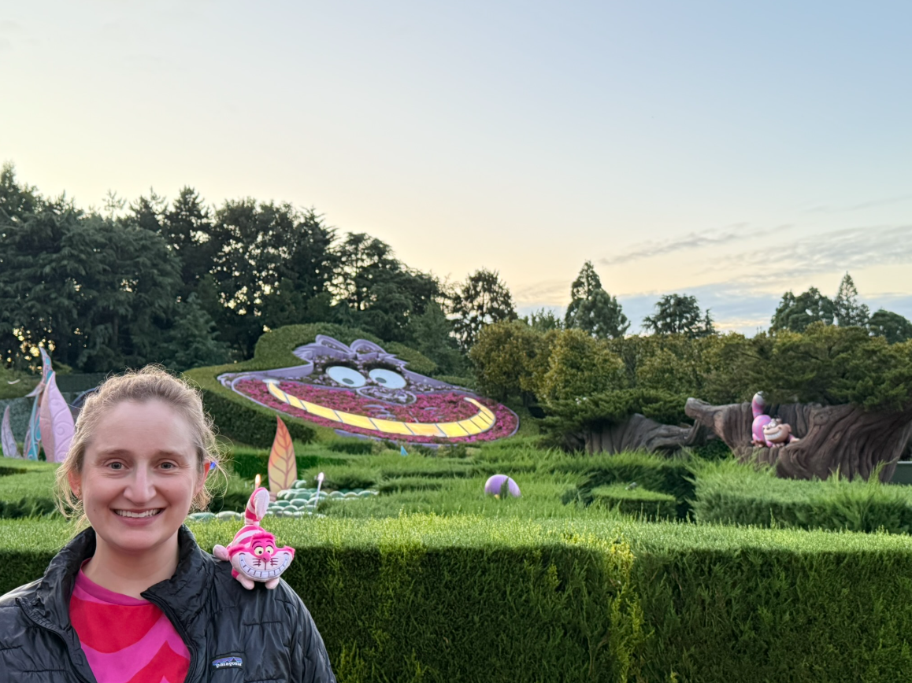
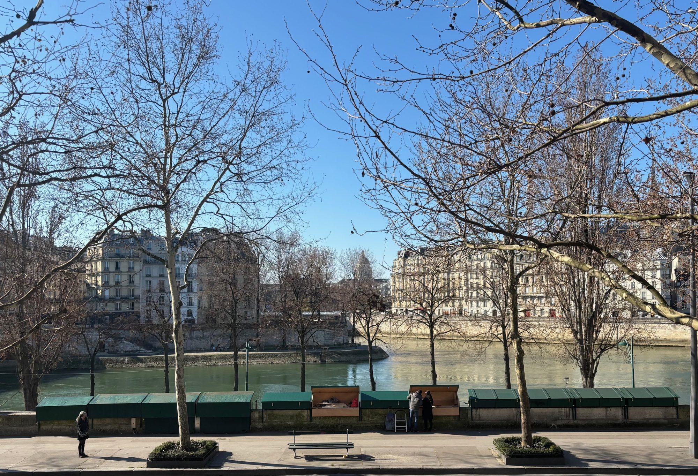
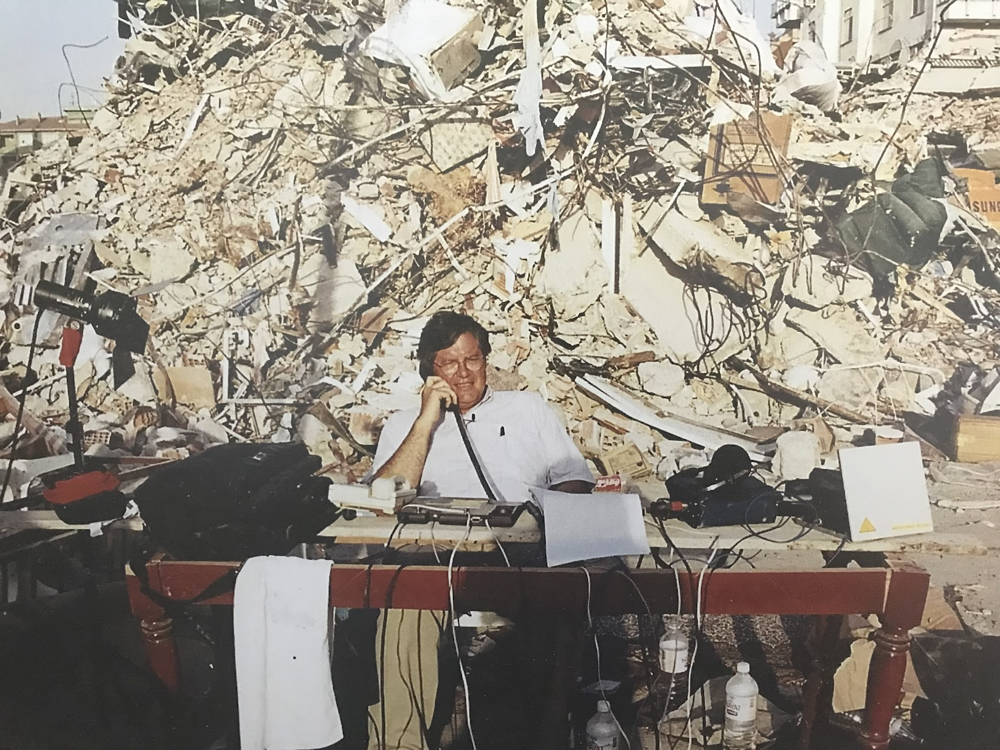
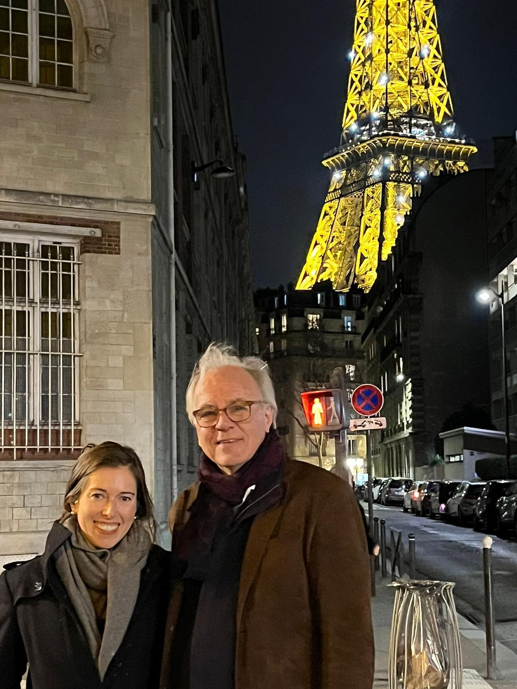

9 articles from “The Chicago-Paris Connection,” Dr. Rob Murphy’s column for Classic Chicago Magazine.
The articles from 2024 and 2025 were recovered from the magazine’s archive of its original website. The 5 photographs from the Rebecca Rosman article could not be recovered; their captions are shown in place.
2025
No photo
November 1, 2025
Reporting from Paris, Journalist Rebecca Rosman’s Chicago Connection

August 30, 2025
Reporting from Paris, Cultural Curator Elizabeth Cummings Lands in Paris!

March 29, 2025
French Cooking, Chicago Roots: How Jane Bertch Built a Successful Cooking School in Paris
2024

December 21, 2024
Reporting from Paris, Journalist Jim Bittermann’s Chicago Connection

September 28, 2024
An American Student’s Journey from Paris to Chicago

July 6, 2024
Genie Godula: From Chicagoan to Parisian TV Celebrity

April 6, 2024
Audrey Chapuis: A Literary Life, from Chicago to Paris

March 16, 2024
Molly in Paris